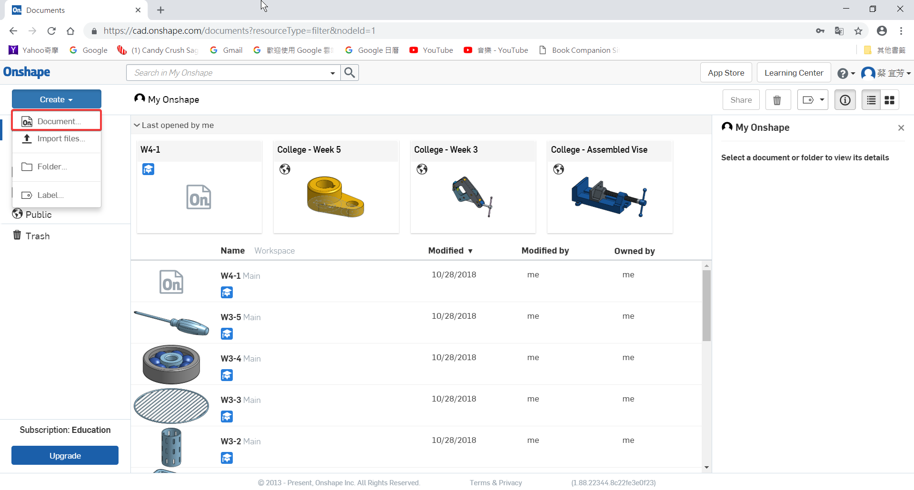
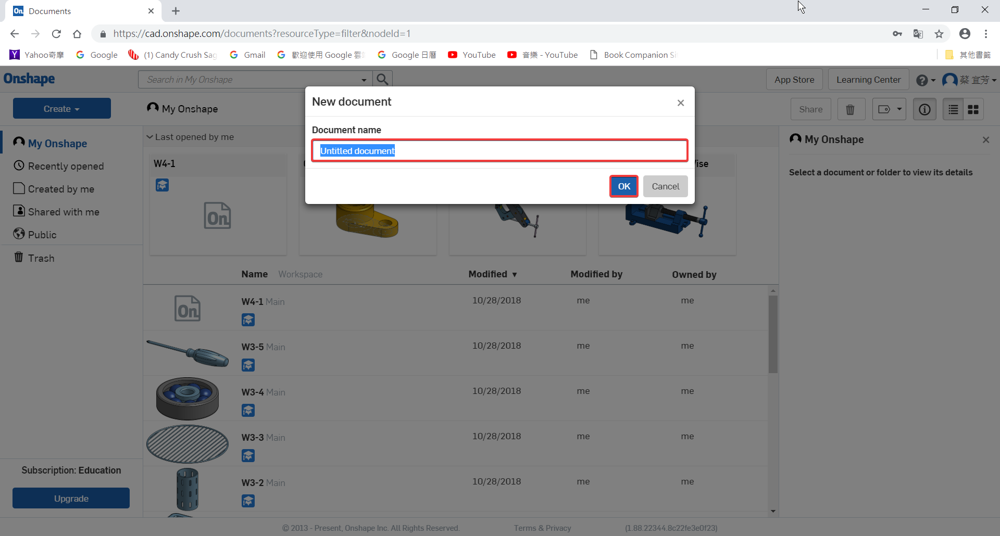
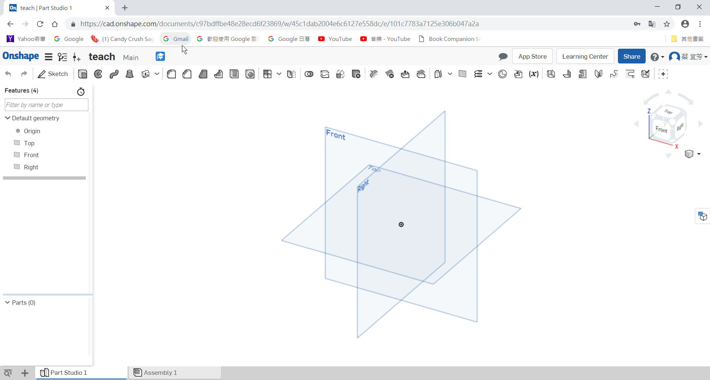
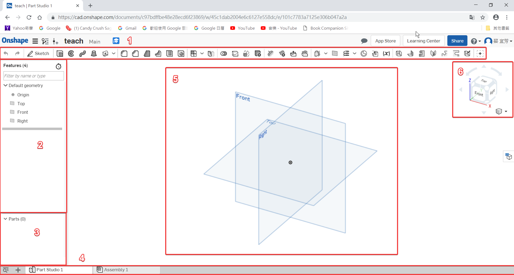
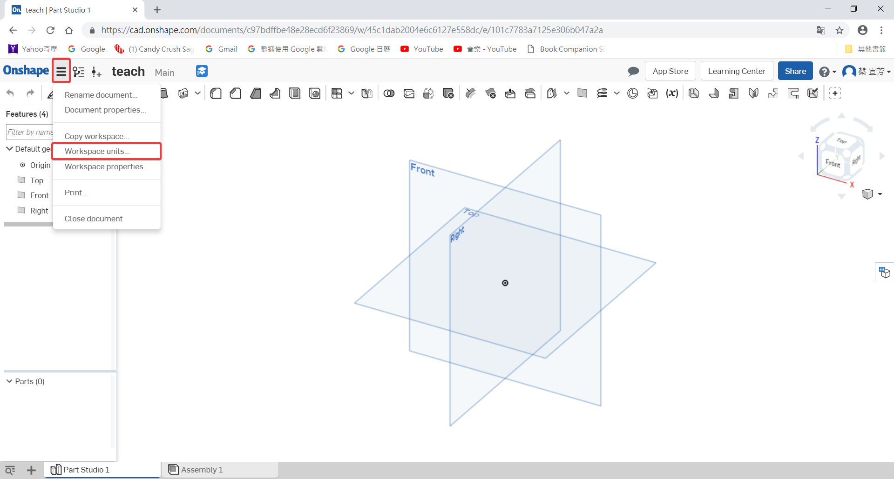
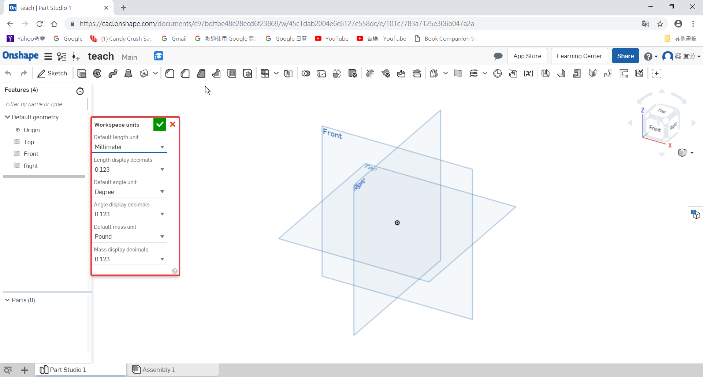
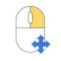
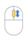

Interface
- How to create a new ducoment ?
如何建立新的文件檔？

Custom name 自訂名稱


- Introduce the interface.
介紹介面

1. The Toolbar : Used to draw sketches ( geometry, dimensions and constraints ) and create features.
工具欄：用於繪製草圖（幾何圖形、訂定尺寸和約束）及建立特徵
2. The Feature List : Features are used to create CAD geometry and this list shows the order in which they were created. ( Scroll down in the left panel to see them all. )
特徵列：建立 CAD 幾何特徵的順序
3. The Part List : This is where parts are listed, in chronological order, as they are created.
零件列：按照時間順序排列出的零件
4. Tabs : Documents can have multiple tabs such as Part Studios, Assemblies, Drawings, and more. More on this later.
標籤：文件檔可以有多個可以標籤，例如：零件、組合、圖面 …
5. The Graphics Area : Where we view, create, and modify geometry.
作圖區：建立和修改幾何的地方
6. The View Cube : This helps us rotate and view our model.
方位視角：旋轉&看不同角度的視角
- How to change Units ?
修改單位


Workspace units :
工作區單位
1. Default length unit
長度單位
2. Length display decimals
長度顯示小數
3. Default angle unit
角度單位
4. Angle display decimals
角度顯示小數
5. Default mass unit
質量單位
6. Mass display decimals
質量顯示小數
- Move the Graphics Area
移動作圖區

3D rotate : Right-mouse-button-click+drag
3D 旋轉：點滑鼠右鍵 + 拖移

Zoom in and out : Scroll up and scroll down, respectively
放大縮小：往前滾動滾輪 -> 放大，往後滾動滾輪 -> 縮小

2D pan : CTRL-right-mouse-button+drag ( middle button click+drag )
2D 平移：CTRL+右鍵 + 拖移和中鍵 + 拖移
Teaching << Previous Next >> Geometry